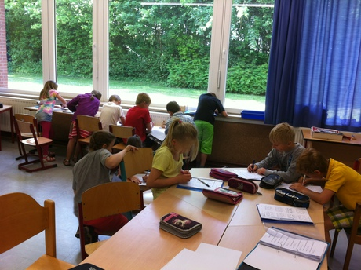
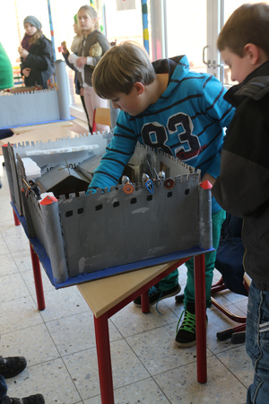

Am Montag, den 27.06.2016 war vielleicht was in der Küche der Grundschule los!
Die Klasse 2b von Frau Blohm formte aus einem Teig kleine Figuren. Nein, das war noch kein Adventsbacken. Frau Wiese stellte mit den aufgeregten Schülerinnen und Schülern Figuren aus Salzteig her. Das hat richtig Spaß gemacht. Und die Ergebnisse können sich auch sehen lassen.
Der ein oder andere, der in den letzten Tagen in den Gruppenraum der Klasse 2a schaute, wunderte sich über das, was dort aufgebaut war. Der Raum ähnelte einem Flohmarkt - überall waren verschiedene Gegenstände auf Tischen verteilt. Von Spielzeugen, über Bastelartikel bis hin zu Kosmetikprodukten waren viele Dinge des Alltags aufgebaut. Die Schülerinnen und Schüler der Klassen 3a und 3b gingen im Rahmen ihres Mathematikunterrichts einkaufen. So lernten die Kinder, welchen Wert verschiedene Gegenstände haben, wie viel bezahlt werden muss und wie viel Rückgeld sie bekommen, wenn sie ihren Einkauf bezahlt haben. Es gab Ladenbesitzer, die verkauften und Kunden, die einkauften. Alle hatten viel Spaß.
Die Klasse 2a hatte Mathematikunterricht. Thema war: Wie teilt man? Ganz eifrig wurden Äpfel, Milchtüten und vieles mehr auf eine bestimmte Anzahl von Personen aufgeteilt. Hier ein paar Bilder davon:

Am vergangenen Freitag und Montag gab es in der großen Pausenhalle fuer die Schuelerinnen und Schueler Spannendes zu sehen. Die Klasse 4a von Frau Machedanz praesentierte ihre gebastelten Burgen. Hier ein paar Fotos:
